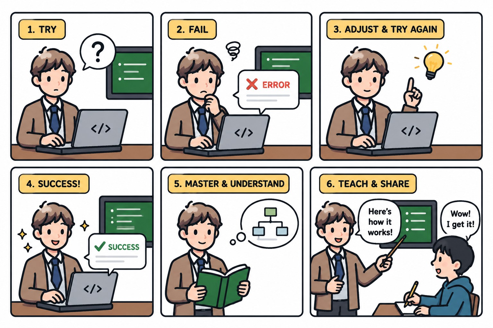

Paper
Transferable Self-Evolving Playbooks for Agentic Security Auditing
EvoHunt studies whether security-audit procedure can be learned outside the model and harness. Starting from an empty playbook, an audit agent runs on source-available advisory cases, an evaluator scores evidence against ground truth, and a reviser commits playbook updates backed by failure analysis.
The learned playbook is a versioned, inspectable artifact containing workflows, validation gates, vulnerability-class strategies, false-positive controls, and reproduction requirements. The paper evaluates both acquisition and transfer to weaker student agents.
Highlights
What the paper reports
Release
Artifacts
The public artifact package is being organized. It will collect the materials needed to inspect the benchmark, scoring records, playbooks, and released traces at an appropriate disclosure level.
View artifact repository